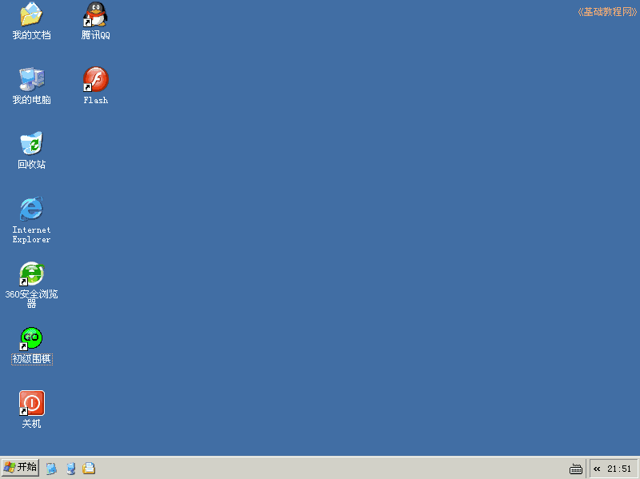
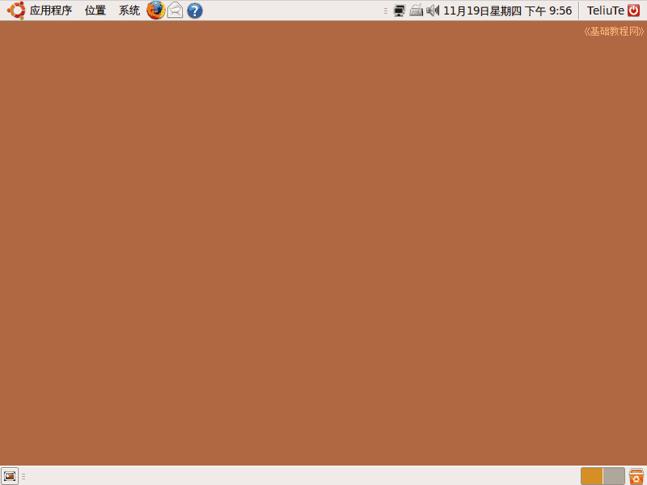

对比 Windows 和 Ubuntu
作者：Teliute 来源：基础教程网
二、经典桌面 返回目录 下一课 系统启动完成后，停留在的界面就是桌面；
1、Windows XP 经典桌面

2、Ubuntu 9.04 桌面

Ubuntu 的程序都放在了上面，像菜单、图标、关机，称为“面板”；
Windows 的放在了下边，称为“任务栏”
本教程由86团学校TeliuTe制作|著作权所有
基础教程网：http://teliute.org/
美丽的校园……
转载和引用本站内容，请保留版权信息和本站链接。